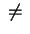

In this document we will describe each module briefly and then give a
list of the definitions made and theorems proved in each module. The
syntax used in the module listings is the usual LEGO syntax. We
restrict the documentation to the standard configuration. The types
given are always the types produced when the library file is loaded.
The notation ``...'' indicates omission of a proof term.
Generally the only declarations which have been added to the context
are the data-type constructors and elimination rules; all else is
derived. The exceptions are in the definition of the quotient type
and the axiom truefalse for booleans in the
alternative library lib_Prop with elimination over
Prop.